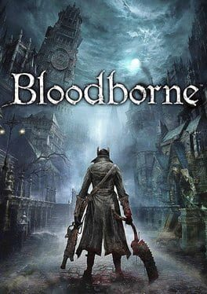

Bloodborne |
||
|---|---|---|
|  | Sinopsis: Cuenta la historia de una noche en la ciudad de Yharnam: una noche de cacería. Todo apunta a que algo va muy mal en esta ciudad, una misteriosa enfermedad que se apodera de sus gentes y que las convierte en bestias. Y a las bestias se las caza. En esta noche la buena gente se atrinchera en sus casas y reza mientras unos personajes conocidos como cazadores merodean por las calles, aniquilando bestias, aliviando la carga de los habitantes de la ciudad. |
Desarrollador:From Software Plataformas: PlayStation 4 Año: 2015 Duracion:60 horas aprox Pais:Japon |
Criticas Profesionales:Alejandro PascualMiyazaki demuestra que tiene un estilo único a la hora de crear sus mundos. Bloodborne apuesta por la renovación de la saga Souls, con la que lo único que no comparte es el nombre. Si bien ya no cala tan hondo la novedad por tener tres juegos a nuestras espaldas, consigue la excelencia a base de un sistema de combate único, muy visceral y más eficaz que lo visto anteriormente. Sumándole un diseño colosal, tanto en poderío técnico como en logro artístico, estamos hablando de una de las obras más importantes de la actual generación. |
Trailer |
Obtener:AlquilarComprar |
Registrate/Iniciar Sesion